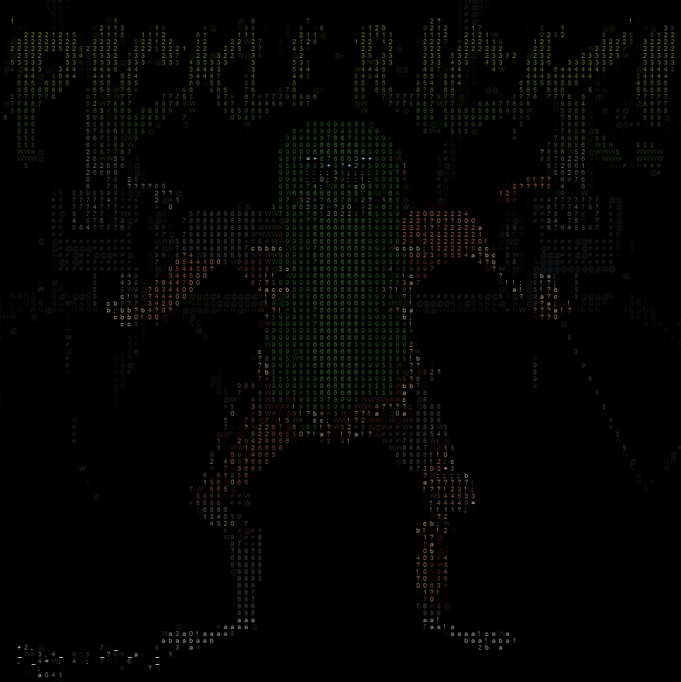
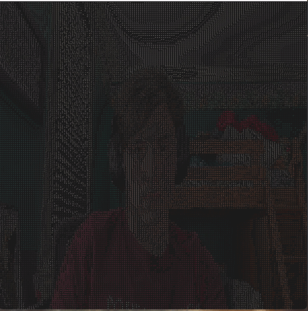

Transforming Images into ASCII Art with Python
Exploring various programming techniques can be both educational and immensely captivating. One intriguing project that caught my interest is converting images into ASCII art, a creative way to represent images using characters. This project utilizes Python, OpenCV, and Pygame to achieve this transformation.
In this blog post, I'll walk you through the development of an Image to ASCII Art converter, explaining how the code works and sharing what I learned along the way. By the end, you'll understand the basics of image processing and ASCII art creation, and how to implement it using Python.
Understanding the Basics
At its core, converting an image to ASCII art involves mapping pixel brightness to characters that visually represent different levels of intensity. ASCII art uses characters like @, #, and $ to create a picture, with each character representing a different shade of gray. The process includes reading an image, converting it to grayscale, and then mapping these grayscale values to ASCII characters.
In our implementation, the image is first resized and converted to grayscale. Then, each pixel's brightness is mapped to a corresponding ASCII character based on a predefined density scale.
The ASCII character brightness scale I used is this:
DENSITY = '$@B%8&WM#*oahkbdpqwmZO0QLCJUYXzcvunxrjft/\|()1[]{}?-_+~<>i!lI;:,"^`\'. 'Key Learnings
- Image Processing with OpenCV: This project deepened my understanding of image processing techniques, including reading, resizing, and converting images to grayscale.
- Brightness Mapping: Mapping pixel brightness to ASCII characters taught me about handling image data and the concept of density mapping.
- Using Pygame: Implementing Pygame for rendering ASCII art in a window was a great way to learn about graphical display and event handling in Python.
- Color Handling: Integrating color into the ASCII art added complexity and provided insights into color channel manipulation.
Implementing the ASCII Art Converter
Let's delve into the code to see how the Image to ASCII Art converter is implemented using Python. The code consists of several components:
Constants
DENSITY = '$@B%8&WM#*oahkbdpqwmZO0QLCJUYXzcvunxrjft/\|()1[]{}?-_+~<>i!lI;:,"^`\'. '
IMAGE = './ImageToASCII/test.jpg'
FONT_SIZE = 5
WIDTH = 200
HEIGHT = 200- DENSITY: The ASCII character scale used for mapping pixel brightness.
- IMAGE: The path to the input image.
- FONT_SIZE: The size of the font used for rendering the ASCII art.
- WIDTH and HEIGHT: The dimensions to which the image is resized.
Image Processing Functions
def get_image():
image = cv2.imread(IMAGE, cv2.IMREAD_COLOR)
image = cv2.resize(image, (WIDTH, HEIGHT))
return image
def get_brightness(image):
gray = cv2.cvtColor(image, cv2.COLOR_BGR2GRAY)
return gray- get_image() Reads the image and resizes it to the specified width and height.
- get_brightness() Converts the image to grayscale for brightness mapping.
Density Mapping
def map_density(brightness):
density = ''
for i in range(WIDTH):
for j in range(HEIGHT):
density += DENSITY[int(brightness[i][j] / 255 * len(DENSITY)) - 1]
density += '\n'
return density- map_density() Maps pixel brightness to ASCII characters based on the density scale.
Display
def display_ascii(density):
window_width = WIDTH * FONT_SIZE
window_height = HEIGHT * FONT_SIZE
window = pygame.display.set_mode((window_width, window_height))
pygame.display.set_caption("ASCII Art")
font = pygame.font.SysFont("Arial", FONT_SIZE)
for i, row in enumerate(density.split('\n')):
for j, char in enumerate(row):
rendered_ascii = font.render(char, True, (255, 255, 255))
window.blit(rendered_ascii, (j * FONT_SIZE, i * FONT_SIZE))
pygame.display.update()
while True:
for event in pygame.event.get():
if event.type == pygame.QUIT:
pygame.quit()
return- display_ascii() Renders the ASCII art in a Pygame window and handles display events.
This code will display the input image in black & white ASCII art, but I have also implemented the option to use color.
Here's what the final result with color looks like:

I have also implemented it to work with video capture using OpenCV. Here's what that looks like:

Conclusion
Converting images to ASCII art is a fascinating blend of art and programming. This project provided valuable insights into image processing, brightness mapping, and graphical display with Python. I hope this post has inspired you to explore ASCII art creation and perhaps experiment with your own implementations.
Thank you for reading, and happy coding! The entire code for this project can be found here.
Posted by: Aidan Vidal
Posted on: May 31, 2024